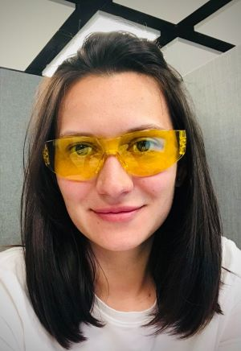

uk
Yuliia Zaborska

Current Location: Warszawa, Poland
Email: y.zaborskaya@gmail.com
Phone: +48000000000
SUMMARY OF QUALIFICATIONS
- English B2, good communication skills
- Ukrainian - native
- 5 years of experience as a sales manager
- Excellent team-player
- Results-oriented with strong analytical skills
WORK EXPERIENCE
- Chief Specialist of the Department of State Registration of Legal Entities and Legalization of Citizens' Associations, September 2014 - August 2016
- Sales Manager, September 2016 – August 2022
EDUCATION
- Bachelor's Deg., Law, Kharkiv National University of Internal Affairs, Kharkiv, Ukraine, 2010
- Master's Deg., Law, National University "Odesa Law Academy" , Odesa, Ukraine, 2014